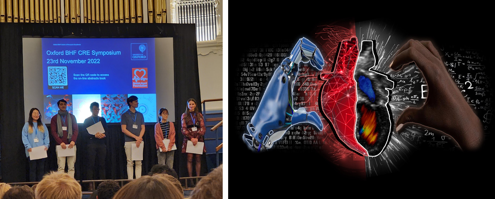
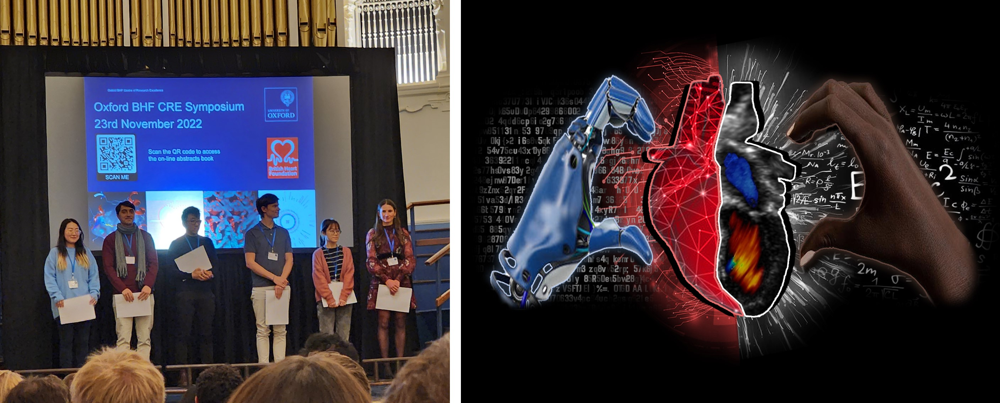
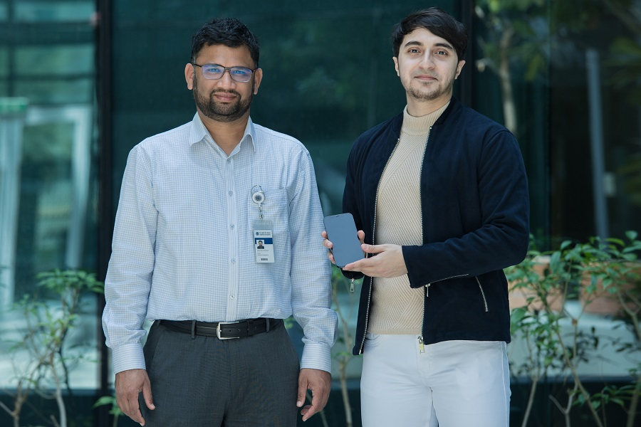
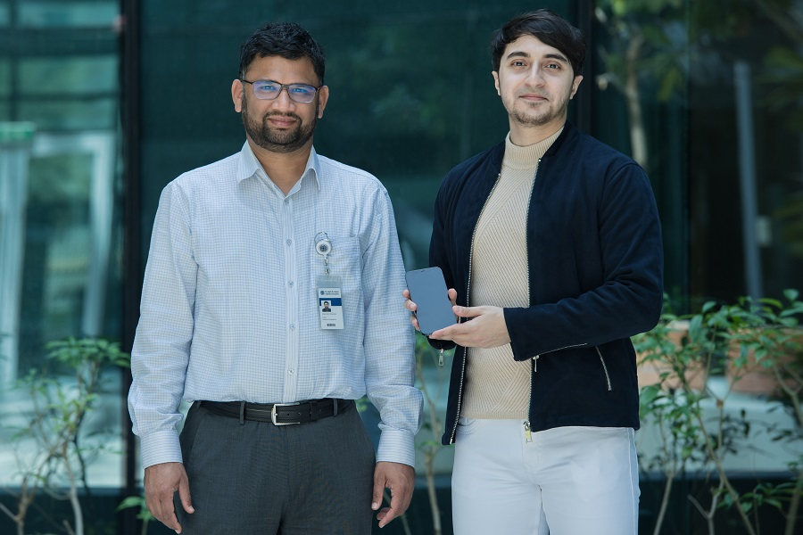
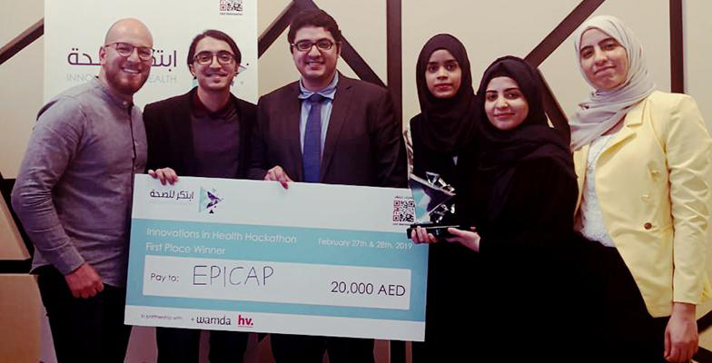
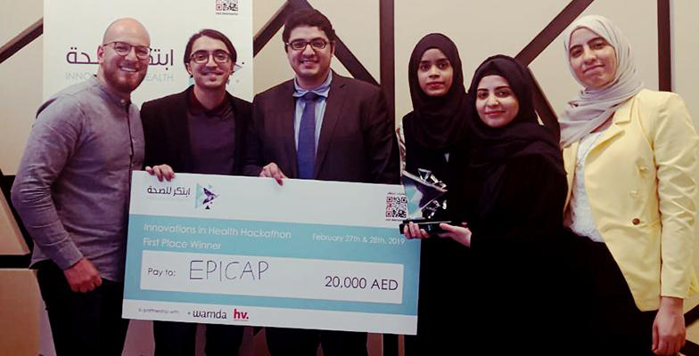

Extra-curricular
Media coverage:
BHF CRE 2022 Symposium Awards

Oxford BHF CRE Annual Symposium took place at Oxford Town Hall on Wednesday 23rd November 2022
Image Competition - Judges' selection: Mohanad Alkhodari (CVMed RDM, Leeson Group)
IA: (I)nsightful (A)spirations Towards Merging Human Knowledge with (A)rtificial (I)ntelligence in Cardiology
https://www.cardioscience.ox.ac.uk/events/bhf-cre-symposium-2022

Oxford BHF CRE Annual Symposium took place at Oxford Town Hall on Wednesday 23rd November 2022
Image Competition - Judges' selection: Mohanad Alkhodari (CVMed RDM, Leeson Group)
IA: (I)nsightful (A)spirations Towards Merging Human Knowledge with (A)rtificial (I)ntelligence in Cardiology
https://www.cardioscience.ox.ac.uk/events/bhf-cre-symposium-2022
KU Radio Science - Breathing for Covid - 19 Detection with Dr. Ahsan Khandoker & Mohanad Alkhodari

New Artificial Intelligence Technique Could Tell if You Have Covid-19 from the Sound of Your Breathing
The sound of a person's breathing, cough or even their voice could all be used to help diagnose patients with Covid-19
Khalifa University researchers design an app using artificial intelligence to detect the sounds of a coronavirus infection
https://soundcloud.com/khalifauni/ku-radio-science-breathing-for-covid-19-detection-with-dr-ahsan-khandoker-mohanad-alkhodari https://www.ku.ac.ae/new-artificial-intelligence-technique-could-tell-if-you-have-covid-19-from-the-sound-of-your-breathing

New Artificial Intelligence Technique Could Tell if You Have Covid-19 from the Sound of Your Breathing
The sound of a person's breathing, cough or even their voice could all be used to help diagnose patients with Covid-19
Khalifa University researchers design an app using artificial intelligence to detect the sounds of a coronavirus infection
https://soundcloud.com/khalifauni/ku-radio-science-breathing-for-covid-19-detection-with-dr-ahsan-khandoker-mohanad-alkhodari https://www.ku.ac.ae/new-artificial-intelligence-technique-could-tell-if-you-have-covid-19-from-the-sound-of-your-breathing
Convolutional & Recurrent Neural Networks for The Detection of Valvular Heart Diseases in Phonocardiogram Recordings
Cutting-edge deep learning techniques in Artificial Intelligence (AI) to propose a method to accurately classify five major types of valvular heart disease (VHD)
The scholars conclude that their method paves the way towards implementing deep learning models in VHD identification under clinical settings to assist clinicians in decision making and reduce errors in clinical diagnosis.
https://www.adu.ac.ae/news-and-events/news/news/detail/2021/03/04/research-excellence---department-of-electrical-and-computer-engineering
Cutting-edge deep learning techniques in Artificial Intelligence (AI) to propose a method to accurately classify five major types of valvular heart disease (VHD)
The scholars conclude that their method paves the way towards implementing deep learning models in VHD identification under clinical settings to assist clinicians in decision making and reduce errors in clinical diagnosis.
https://www.adu.ac.ae/news-and-events/news/news/detail/2021/03/04/research-excellence---department-of-electrical-and-computer-engineering
CEN students win first place at the Ministry of Health and Prevention (MOHAP) Hackathon on Innovations in Health

Engineering students from American University of Sharjah (AUS) were declared winners at the recently-held Ministry of Health and Prevention (MOHAP) Hackathon on Innovations in Health for their project entitled “Smart Wearable Cap for Epileptic Patients.” Graduate students in biomedical engineering Mohanad Alkhodari, Aseel Alatoom, Abdelrahman Mostafa, Jumana Farhat and Shafiya Sabah received a trophy and AED 20,000 for their win.
https://www.aus.edu/media/news/cen-students-win-first-place-at-the-ministry-of-health-and-prevention-mohap-hackathon-on

Engineering students from American University of Sharjah (AUS) were declared winners at the recently-held Ministry of Health and Prevention (MOHAP) Hackathon on Innovations in Health for their project entitled “Smart Wearable Cap for Epileptic Patients.” Graduate students in biomedical engineering Mohanad Alkhodari, Aseel Alatoom, Abdelrahman Mostafa, Jumana Farhat and Shafiya Sabah received a trophy and AED 20,000 for their win.
https://www.aus.edu/media/news/cen-students-win-first-place-at-the-ministry-of-health-and-prevention-mohap-hackathon-on